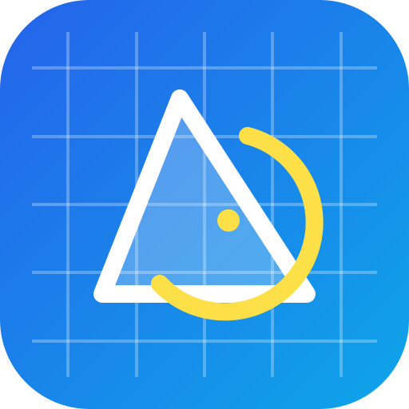

👁️

ずけいノート
↩
もどす
↪
やりなおす
🗑
ぜんぶけす
いろ
ふとさ
🧲
方眼スナップ
📐
角を表示
✂️
はさみ
🌙
ダークモード
⛶
全画面
⚙
設定・保存
頂点をドラッグして変形
🔄
回転・拡大縮小
↻
回転のみ
⤢
拡大・縮小
✦
頂点編集
📋
複製
⇄
反転
🗑
削除
✔
完了
👆
えらぶ・うごかす
✋
がめん移動
●
点
📏
線
△
三角形
□
四角形
⬠
正多角形
◯
円
🧭
コンパス
🧹
消しゴム
＋
100%
－
画像の濃さ
画像サイズ
╱
直線
〰
自由線
↗
矢印
◹
一般三角形
△
二等辺三角形
▲
正三角形
⊿
直角三角形
■
正方形
▭
長方形
▱
平行四辺形
⏢
台形
◇
ひし形
⬠
正五角形
⬡
正六角形
🛑
正八角形
◯
正円
⬭
楕円
色
🎨
中をぬる
:
ON
太さ
表示用語のレベル
💾
JSON保存
📂
JSON読込
🗜
ZIP保存
📦
ZIP読込
🖼
背景画像を重ねる
🗑
背景画像を削除
📖
オンラインマニュアル
📱
画面を横向きにしてください
このアプリは横向き専用です。端末を横向きにするか、ブラウザウィンドウを横長にしてご使用ください。